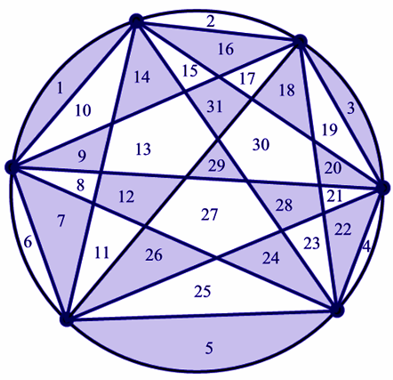

ICPC World Finals 2008 · Problem B
Combinatorics is a branch of mathematics chiefly concerned with counting discrete objects. For instance, how many ways can you pick two people out of a crowd of n people? Into how many regions can you divide a circular disk by connecting n points on its boundary with one another? How many cubes are in a pyramid with square layers ranging from 1 × 1 to n × n cubes?

Many questions like these have answers that can be reduced to simple polynomials in n. The answer to the first question above is n(n-1)/2, or (n^2-n)/2. The answer to the second is (n^4-6n^3+23n^2-18n+24)/24. The answer to the third is n(n+1)(2n+1)/6, or (2n^3+3n^2+n)/6. We write these polynomials in a standard form, as a polynomial with integer coefficients divided by a positive integer denominator.
These polynomials are answers to questions that can have integer answers only. But since they have fractional coefficients, they look as if they could produce non-integer results! Of course, evaluating these particular polynomials on a positive integer always results in an integer. For other polynomials of similar form, this is not necessarily true. It can be hard to tell the two cases apart. So that, naturally, is your task.
The input consists of multiple test cases, each on a separate line. Each test case is an expression in the form (P)/D, where P is a polynomial with integer coefficients and D is a positive integer denominator. P is a sum of terms of the form Cn^E, where the coefficient C and the exponent E satisfy the following conditions:
See the sample input for details. Input is terminated by a line containing a single period.
For each test case, print the case number (starting with 1). Then print Always an integer if the test case polynomial evaluates to an integer for every positive integer n. Print Not always an integer otherwise. Print the output for separate test cases on separate lines. Your output should follow the same format as the sample output.
(n^2-n)/2 (2n^3+3n^2+n)/6 (-n^14-11n+1)/3 .
Case 1: Always an integer Case 2: Always an integer Case 3: Not always an integer